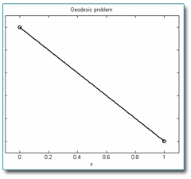

Classical problems in the calculus of variations
Geodesic problem
#include <iostream>
#include <time.h>
#include "arc_length.h"
#include "../../source/opennn.h"
using namespace OpenNN;
int main(void)
{
srand((unsigned)time(NULL));
const double xa = -1.0;
const double ya = -1.0;
const double xb = 1.0;
const double yb = 1.0;
ArcLength arc_length;
arc_length.set_initial_independent_variable(xa);
arc_length.set_final_independent_variable(xb);
NeuralNetwork neural_network(1, 3, 1);
neural_network.construct_inputs_outputs_information();
InputsOutputsInformation* inputs_outputs_information_pointer = neural_network.get_inputs_outputs_information_pointer();
inputs_outputs_information_pointer->set_input_name(0, "x");
inputs_outputs_information_pointer->set_output_name(0, "y");
neural_network.construct_scaling_layer();
ScalingLayer* scaling_layer_pointer = neural_network.get_scaling_layer_pointer();
scaling_layer_pointer->set_minimum(0, xa);
scaling_layer_pointer->set_maximum(0, xb);
neural_network.set_scaling_layer_flag(false);
neural_network.construct_unscaling_layer();
neural_network.set_unscaling_layer_flag(false);
neural_network.construct_conditions_layer();
ConditionsLayer* conditions_layer_pointer = neural_network.get_conditions_layer_pointer();
conditions_layer_pointer->set_external_input_value(0, xa);
conditions_layer_pointer->set_external_input_value(1, xb);
conditions_layer_pointer->set_output_value(0, 0, ya);
conditions_layer_pointer->set_output_value(0, 1, yb);
neural_network.set_conditions_layer_flag(true);
PerformanceFunctional performance_functional(&neural_network);
performance_functional.construct_objective_term(PerformanceFunctional::FINAL_SOLUTIONS_ERROR, &arc_length);
Vector<double> parameters = neural_network.arrange_parameters();
std::cout << performance_functional.calculate_evaluation() << std::endl;
std::cout << performance_functional.calculate_evaluation(parameters) << std::endl;
std::cout << performance_functional.calculate_gradient() << std::endl;
TrainingStrategy training_strategy(&performance_functional);
TrainingStrategy::Results training_strategy_results = training_strategy.perform_training();
arc_length.save("../data/geodesic_problem/arc_length.xml");
arc_length.load("../data/geodesic_problem/arc_length.xml");
arc_length.save("../data/geodesic_problem/arc_length.xml");
arc_length.save_data(neural_network, "../data/geodesic_problem/arc_length_data.dat");
neural_network.save("../data/geodesic_problem/neural_network.xml");
performance_functional.save("../data/geodesic_problem/performance_functional.xml");
training_strategy.save("../data/geodesic_problem/training_strategy.xml");
return(0);
}

Problem parameters
Mathematical model object
Neural network object
Inputs-outputs information
Scaling layer
Unscaling layer
Conditions layer
Performance functional object
Objective term
Training strategy object
Save results to file
Brachistochrone problem
#include <iostream>
#include <time.h>
#include "../../source/opennn.h"
#include "descent_time.h"
using namespace OpenNN;
int main(void)
{
srand((unsigned)time(NULL));
const double xa = 0.0;
const double ya = 1.0;
const double xb = 1.0;
const double yb = 0.0;
DescentTime descent_time;
const double small = 1.0e-3;
descent_time.set_initial_independent_variable(xa+small);
descent_time.set_final_independent_variable(xb);
NeuralNetwork neural_network(1, 3, 1);
neural_network.initialize_parameters_normal(0.0, 0.1);
neural_network.construct_inputs_outputs_information();
InputsOutputsInformation* inputs_outputs_information_pointer = neural_network.get_inputs_outputs_information_pointer();
inputs_outputs_information_pointer->set_input_name(0, "x");
inputs_outputs_information_pointer->set_output_name(0, "y");
neural_network.construct_conditions_layer();
ConditionsLayer* conditions_layer_pointer = neural_network.get_conditions_layer_pointer();
Vector<double> external_input_values(2);
external_input_values[0] = xa;
external_input_values[1] = xb;
conditions_layer_pointer->set_external_input_values(external_input_values);
Matrix<double> output_values(1, 2);
output_values[0][0] = ya;
output_values[0][1] = yb;
conditions_layer_pointer->set_output_values(output_values);
neural_network.construct_bounding_layer();
BoundingLayer* bounding_layer_pointer = neural_network.get_bounding_layer_pointer();
bounding_layer_pointer->set_upper_bound(0, 0.0-1.0e-3);
PerformanceFunctional performance_functional(&neural_network);
performance_functional.construct_objective_term(PerformanceFunctional::FINAL_SOLUTIONS_ERROR, &descent_time);
Vector<double> parameters = neural_network.arrange_parameters();
std::cout << performance_functional.calculate_evaluation() << std::endl;
std::cout << performance_functional.calculate_gradient() << std::endl;
std::cout << performance_functional.calculate_evaluation(parameters) << std::endl;
TrainingStrategy training_strategy(&performance_functional);
TrainingStrategy::Results training_strategy_results = training_strategy.perform_training();
neural_network.save("../data/brachistochrone_problem/neural_network.xml");
neural_network.save_expression("../data/brachistochrone_problem/expression.txt");
descent_time.save_data(neural_network, "../data/brachistochrone_problem/descent_time.dat");
training_strategy_results.save("../data/brachistochrone_problem/training_strategy_results.dat");
return(0);
}

Problem parameters
Mathematical model
Neural network
Inputs-outputs information
Conditions layer
Bounding layer
Performance functional
Objective term
Training strategy object
Save results
Catenary problem
#include <iostream>
#include <time.h>
#include "../../source/opennn.h"
#include "potential_energy.h"
#include "../geodesic_problem/arc_length.h"
using namespace OpenNN;
int main(void)
{
srand( (unsigned)time( NULL ) );
const double xa = 0.0;
const double ya = 1.0;
const double xb = 1.0;
const double yb = 1.0;
const double length = 1.5;
PotentialEnergy potential_energy;
potential_energy.set_initial_independent_variable(xa);
potential_energy.set_final_independent_variable(xb);
ArcLength arc_length;
arc_length.set_initial_independent_variable(xa);
arc_length.set_final_independent_variable(xb);
NeuralNetwork neural_network(1, 3, 1);
neural_network.construct_inputs_outputs_information();
InputsOutputsInformation* inputs_outputs_information_pointer = neural_network.get_inputs_outputs_information_pointer();
inputs_outputs_information_pointer->set_input_name(0, "x");
inputs_outputs_information_pointer->set_output_name(0, "y");
neural_network.construct_scaling_layer();
ScalingLayer* scaling_layer_pointer = neural_network.get_scaling_layer_pointer();
scaling_layer_pointer->set_minimum(0, xa);
scaling_layer_pointer->set_maximum(0, xb);
neural_network.set_scaling_layer_flag(false);
neural_network.construct_unscaling_layer();
UnscalingLayer* unscaling_layer_pointer = neural_network.get_unscaling_layer_pointer();
unscaling_layer_pointer->set_minimum(0, 0.0);
unscaling_layer_pointer->set_maximum(0, yb);
neural_network.set_unscaling_layer_flag(false);
neural_network.construct_conditions_layer();
ConditionsLayer* conditions_layer_pointer = neural_network.get_conditions_layer_pointer();
conditions_layer_pointer->set_external_input_value(0, xa);
conditions_layer_pointer->set_external_input_value(1, xb);
conditions_layer_pointer->set_output_value(0, 0, ya);
conditions_layer_pointer->set_output_value(0, 1, yb);
neural_network.set_conditions_layer_flag(true);
neural_network.construct_bounding_layer();
BoundingLayer* bounding_layer_pointer = neural_network.get_bounding_layer_pointer();
bounding_layer_pointer->set_lower_bound(0, 0.0);
bounding_layer_pointer->set_upper_bound(0, 1.0);
PerformanceFunctional performance_functional(&neural_network);
FinalSolutionsError* final_solutions_error = new FinalSolutionsError(&neural_network, &potential_energy);
final_solutions_error->set_final_solution_error_weight(0, 1.0);
performance_functional.set_objective_term_pointer(final_solutions_error);
Vector<double> parameters = neural_network.arrange_parameters();
std::cout << final_solutions_error->calculate_evaluation() << std::endl;
std::cout << final_solutions_error->calculate_evaluation(parameters) << std::endl;
std::cout << final_solutions_error->calculate_gradient() << std::endl;
FinalSolutionsError* constraints_term_pointer = new FinalSolutionsError(&neural_network, &arc_length);
constraints_term_pointer->set_target_final_solution(0, length);
performance_functional.set_constraints_term_pointer(constraints_term_pointer);
std::cout << constraints_term_pointer->calculate_evaluation() << std::endl;
std::cout << constraints_term_pointer->calculate_evaluation(parameters) << std::endl;
std::cout << constraints_term_pointer->calculate_gradient() << std::endl;
std::cout << performance_functional.calculate_evaluation() << std::endl;
std::cout << performance_functional.calculate_evaluation(parameters) << std::endl;
std::cout << performance_functional.calculate_gradient() << std::endl;
TrainingStrategy training_strategy(&performance_functional);
TrainingStrategy::Results training_strategy_results = training_strategy.perform_training();
potential_energy.save("../data/catenary_problem/potential_energy.xml");
potential_energy.load("../data/catenary_problem/potential_energy.xml");
potential_energy.save_data(neural_network, "../data/catenary_problem/potential_energy_data.dat");
arc_length.save("../data/catenary_problem/arc_length.xml");
arc_length.load("../data/catenary_problem/arc_length.xml");
arc_length.save_data(neural_network, "../data/catenary_problem/arc_length_data.dat");
neural_network.save("../data/catenary_problem/neural_network.xml");
neural_network.load("../data/catenary_problem/neural_network.xml");
neural_network.save_data("../data/catenary_problem/neural_network_data.dat");
neural_network.save_expression("../data/catenary_problem/expression.txt");
performance_functional.save("../data/catenary_problem/performance_functional.xml");
performance_functional.load("../data/catenary_problem/performance_functional.xml");
training_strategy.save("../data/catenary_problem/training_strategy.xml");
training_strategy.load("../data/catenary_problem/training_strategy.xml");
training_strategy_results.save("../data/catenary_problem/training_strategy_results.xml");
return(0);
}

Problem parameters
Mathematical models
Neural network
Inputs-outputs information
Scaling layer
Unscaling layer
Conditions layer
Bounding layer
Performance functional
Objective term
Constratints term
Training strategy
Save results